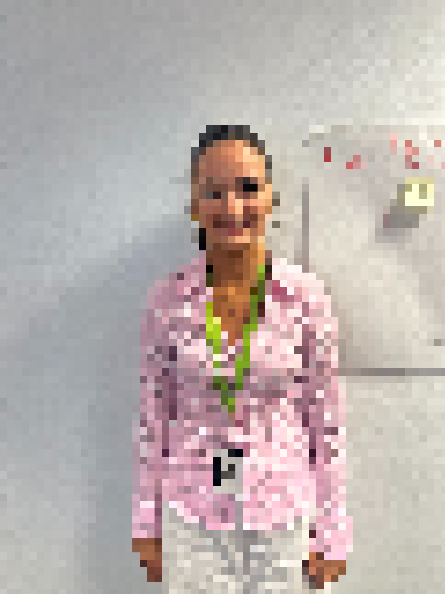

The Team
Four Developers. One Vision.
A dedicated four-person team who designed, built and tested every part of the game and website.

Caoimhe
Scrum Master
Programmed the game and kept the team on track, running daily stand-ups from start to finish.
Project Lead
Leah
Programmer
Handled the game mechanics and dug through countless bugs to get everything working smoothly.
Game Mechanics
Cillian
Web Developer
Built this website across multiple drafts and wrote the game's storyline.
Website

Luke
Art & Design
Designed the characters and backgrounds, and picked the music that ties it all together.
Designer